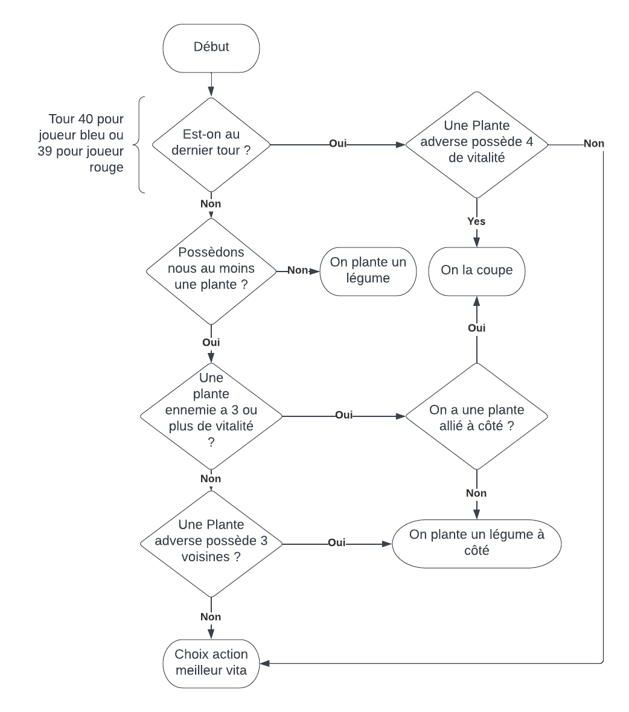

Outils Utilisés
-
IDE NetBeans
-
Java
Compétences Acquises
- Conceptualisation et optimisation de choix algorithmiques
- Partager le développement d’un code en groupe
Objectif
En groupe de deux, conceptualiser et coder une “IA” réalisant le meilleur score possible. Afin d’affronter les différents programmes des autres étudiants de l’IUT. Sur la base du code effectué sur le projet Biosphère 7.
Programme “autonome” : IA Biosphère 7
